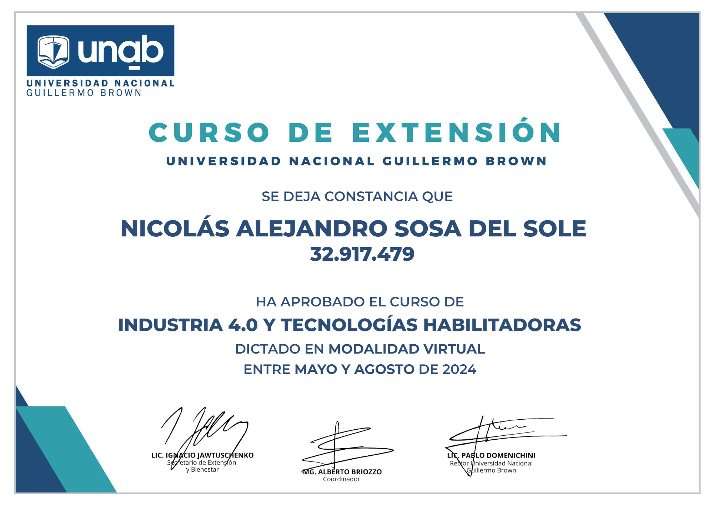
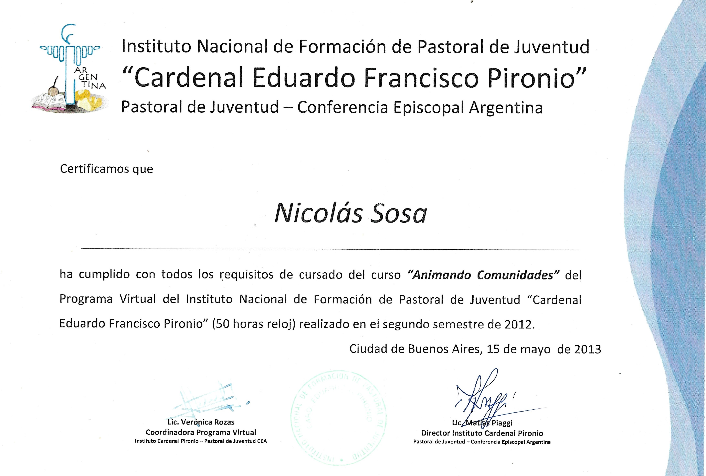

Certificados
2024 - Curso de Industria 4.0 y tecnologías Habilitadoras - UNAB.

2021 - Capacitación sobre Factor de Potencia y capacitores - AmperOHM

2015 - Uso de Herramientas Eléctricas y Manuales - Tec People.

2012 - Curso Animando Comunidades - Instituto Cardenal Pironio - Iglesia Católica.

2007 - Metalurgia Básica do Alumínio - Novelis do Brasil.

Esta Sección continúa en Construcción.